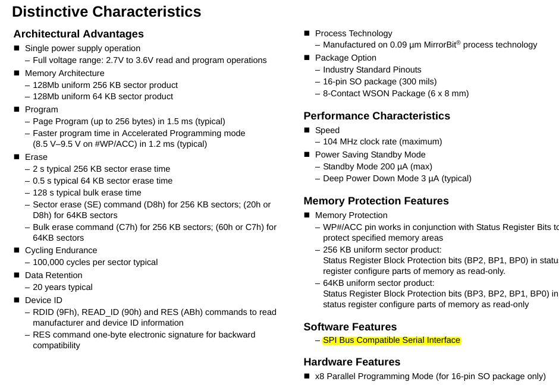
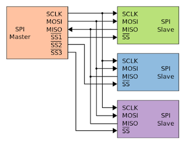
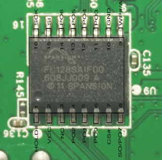
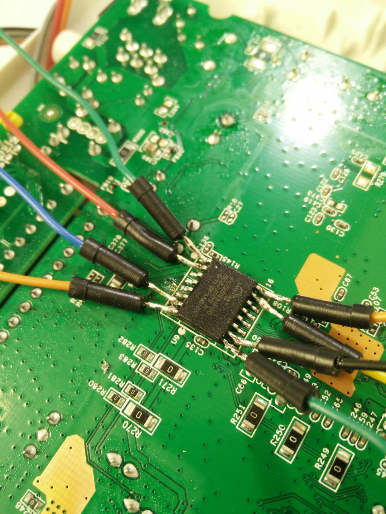
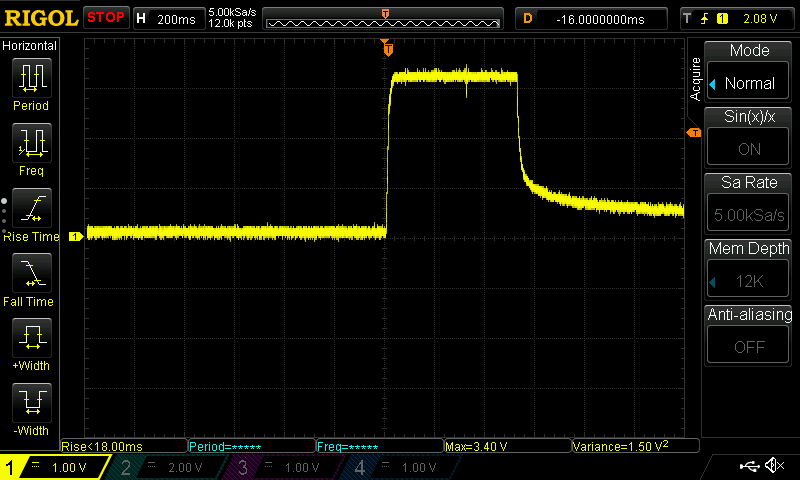
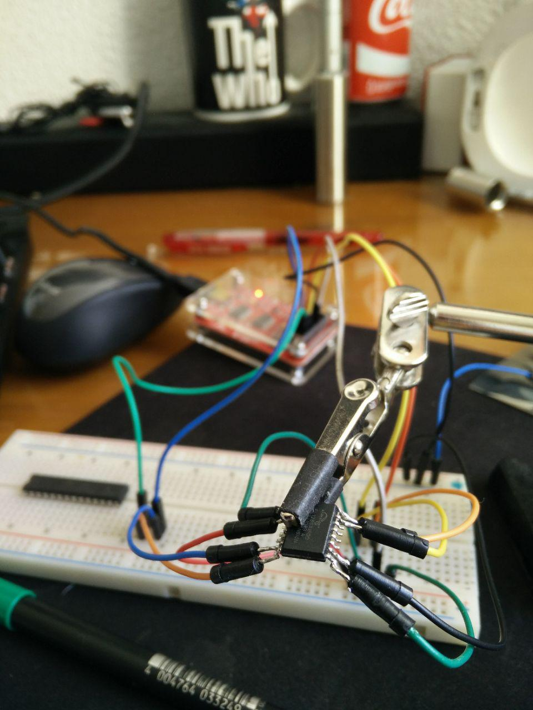
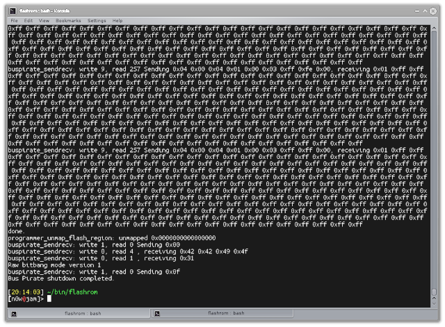
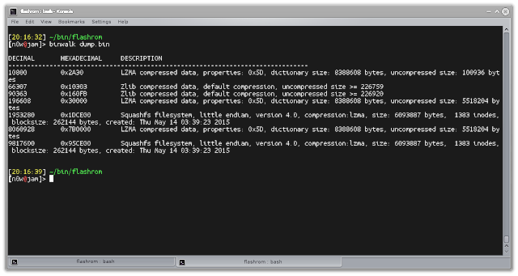

Dumping the contents of a flash chip is not really complex or hard; as usual the devil is in the details. It just requires having the proper hardware to interface the chip and basic (de)soldering skills.
There are a lot of different flash ICs commercially available, as they are integral elements of every consumer grade electronic device today; for this article we'll be using a discarded old DSL cheap router as an example.
After removing screws, covers and whatnot, we take a close look at the PCB looking for flash chips }:D
Now we need to figure out the pinout and how to interface with the device... Let's google that inscription (FL128SAIF00) and download the IC datasheet on the first hit:

...but wait, wtf is SPI?
Well, as Wikipedia details, the Serial Peripheral Interface bus (SPI) is a synchronous serial communication interface specification used for short distance communication, primarily in embedded systems. The interface was developed by Motorola in the late eighties and has become a de facto standard.
There are five logic signals for the interface:

-
SCLK: Serial Clock (output from master).
-
MOSI: Master Output Slave Input, or Master Out Slave In (data output from master).
-
MISO: Master Input Slave Output, or Master In Slave Out (data output from slave).
-
SDIO: Serial Data I/O (bidirectional I/O)
-
SS: Slave Select (often active low, output from master).
Easy enough! There is a master clock, one or two data signals (depending on the implementation) and a last one to be able to signal communications to specific devices in case we are connecting several ones to the bus.
For clarity, I took the pinout from the datasheet and (badly) superimposed it on the IC photo:

Now, to interface with the chip we must connect Vcc and GND to power it up, SI and SO to write to and read from, SCK to drive the clock, CS to select the chip and finally we'll drive HOLD and WP high.

At first I tried to solder cables directly to the IC without desoldering it and, though I was able to start a initial conversation, I couldn't read anything past that. As I had faced that problem before, I suspected that maybe I was powering anything else apart from the flash chip that was preventing me from talking with it (i.e. main processor).
I connected a probe to the processor's VCC rail, set the trigger to ~2V and this happened just right after issuing the first read command:

Looks like I was powering the main uC indeed, which in turn was trying to access the flash IC at the same time as I was. I tried desoldering some pins but I eneded up just desoldering the chip anyway:

Now we can just use flashrom with any of the compatible readers (I used a BusPirate) to dump the contents issuing the following command:
./flashrom -p buspirate_spi:dev=/dev/ttyUSB0 -c S25FL128P......0 --verbose -r dump.bin

Then we can use our favorite binary search tool with it!
